전염병 때문에 나폴레옹의 명령을 거역한 어떤 함장 이야기
게시: 2020-04-06T06:30:25+09:00

아마 이 유튜브 영상을 지난 주에 많이들 보셨을 것입니다. https://youtu.be/ayaLwHW-244 이건 승조원들을 코로나-19로부터 구하기 위해 함내의 상황을 언론에 알렸다가 결국 승조원을 구한 대신 보직 해임 당한 크로지어(Crozier) 함장이 미항공모함 USS Theodore Roosevelt 호를 떠날 때의 모습입니다. 승조원들이 모여 박수를 치며 'Captain Crozier'를 외치는데, 아마 우리나라 장군님들은 이 짧은 비디오 클립을 보고 눈살을 찌푸리실 분들이 많았을 것입니다. 함장이 떠나는데 정복을 갖춰입은 엄숙한 의장은 커녕 온갖 사제 티셔츠 쪼가리를 난잡하게 입은 승조원들이 오와 열을 갖추지도 않고 아무렇게나 모여서 마치 축구 경기 응원하는 것처럼 제멋대로 구호를 외치고 박수를 치는 모습에서 엄정한 군기를 찾기가 어렵기 때문입니다. 그러나 진짜 강한 군대는 겉멋과 X군기에 의해서 만들어지는 것이 아닙니다. 진짜 강한 군대가 만들어지려면 상하가 서로 신뢰하고 지휘관이 자신의 승진보다는 무엇이 정말 국가를 위하는 것인지 바른 판단을 할 수 있어야 합니다. 일부에서는 어떤 경우에라도 군인이 외부로 군사기밀일 수도 있는 사항을 유출시키는 것은 잘못한 일이라고 말할 수도 있겠지만, 저는 함장의 서신 중에서 "“We are not at war. Sailors do not need to die." (지금은 전시가 아니다. 승조원들이 불필요하게 목숨을 잃을 필요가 없다')라고 말하는 부분에 무척 공감이 갑니다. 만약 전시라면 국가를 위해 군인들의 생명을 희생시켜야 할 수도 있습니다. 그러나 지금은 아닙니다. 그런 점에서 저 크로지어 함장의 보직 해임은 개인적으로 꽤 아쉽게 느껴집니다. 그러나 또 생각해보면 크로지어 함장의 행위는 우리나라에서라면 군사기밀 누출로 군법회의에 회부되었을 수도 있는 일인데, 그냥 보직 해임이 되었을 뿐 불명예 제대를 당한 것도 아니니 향후 어떻게 전개될지 아직 속단하기는 이릅니다. 자신의 부하들을 전염병에서 구하기 위해 직속 상관의 명령을 어긴 함장은 나폴레옹 시대에도 있었습니다. 바로 페레(Jean-Baptiste Perrée) 제독입니다. 사실 이 분이 1799년 시리아에서 내린 결정에 대해서는 평가가 꼭 좋게 나올 수는 없습니다. 그러나 향후 이 양반의 행적을 보면 이 분이 꼭 자신의 안위만을 위해서 그런 결정을 내린 것은 아니라는 생각이 들어서 이번 편에서는 나폴레옹의 러시아 원정을 한 주 쉬고 이 분을 위한 특별편을 올립니다. (실은 과거에 썼던 이집트 원정편을 상당 부분 재탕했습니다.) 페레 제독의 결정에 대해서는 여러분 각자가 판단해보시기 바랍니다. ----------------------------- 1798년 7월 나폴레옹은 이집트를 침공했고, 이어서 다음해인 1799년 5월에는 이집트에서 북상하여 시리아를 침공합니다. 그가 뜬금없이 시리아를 침공한 것은 원래 적극적 방어의 성격이었습니다. 당시 이집트의 주인이었던 오스만 투르크가 이집트 탈환을 위해 대대적인 병력을 모아 하나는 로데스(Rhodes) 섬에서 바다를 통해, 하나는 시리아를 통해 공세를 준비하고 있었거든요. 그 중 시리아로부터의 위협을 분쇄하기 위해 기다리지 않고 시리아를 선제 공격한 것은 나름 성공적이었습니다. 약 4만의 '다마스커스(Damascus) 군'은 채 집결을 끝내기도 전에 타보르 (Tabor) 산 전투에서 산산조각이 나버렸고, 그 지휘관인 제자르 파샤는 다마스커스 군의 지휘봉을 잡기는 커녕 아크레(Saint Jean d'Acre) 요새에서 발도 내밀지 못했으니까요. 특히 5월 중순까지의 치열한 아크레 포위전에서, 제자르 파샤의 근거지인 아크레가 거의 파괴되어 버린데다, 덤으로 이집트를 노리던 또 하나의 오스만 원정군인 '로데스(Rhodes) 군'의 일부까지 아크레를 지원하러 왔다가 에서 큰 피해를 입었습니다. 이제 당분간은 이집트를 노릴 침략군 걱정은 안해도 되는 셈이었습니다. 이렇게 생각하면 시리아 원정은 상당히 성공적인 작전이었지요.
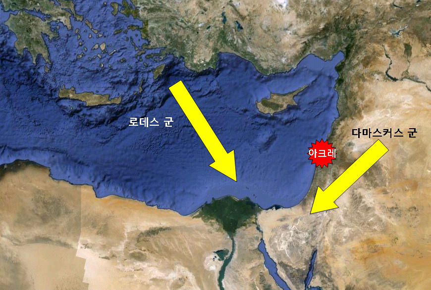
(당시 나폴레옹의 이집트를 위협하던 두 군사 세력입니다. Army of Rhodes는 주로 알바니아 계통, Army of Damscus는 레반트 계통의 군대였습니다.)
하지만 이집트 원정 자체가 무슨 목적으로 결성되었는지를 생각하면 이 아크레 공방전은 나폴레옹에게 큰 패배였습니다. 애초에 나폴레옹의 목적은 이집트 따위가 아니었습니다. 프랑스 지중해 함대가 넬슨에게 전멸당하기 전에는 인도 원정이 진짜 목표였고, 이집트는 중간 경유지 정도에 불과했습니다. 프랑스 함대가 아부키르에서 파멸을 맞이한 뒤에도 나폴레옹에게 있어 이집트는 어디까지나 중간 기착지였습니다. 즉, 여전히 낙타를 타고 시리아와 메소포타미아, 그리고 페르시아를 거쳐 인도까지 원정을 갈 계획을 짜고 있었고, 그것이 어렵다 싶으면 시리아를 거쳐 오스만의 심장부인 이스탄불을 공략할 생각까지도 있었습니다. 결국 이스탄불을 거쳐 육로로 오스트리아의 비엔나를 동쪽으로부터 위협하는 것도 작전 범위의 일부였습니다. 그런데, 그 꿈같은 원대한 계획 모두가, 이 손바닥만한 팔레스타인의 작은 요새 생-장-다크레 (Saint Jean d'Acre)에서 꺾인 것입니다. '이런 작고 초라한 요새조차 함락시키지 못하는 주제에, 언감생심 2천년의 역사를 자랑하는 콘스탄티노플(이스탄불)을 노려 ?' 하는 비난과 조롱이 나폴레옹의 귀에는 들리는 듯 했습니다.
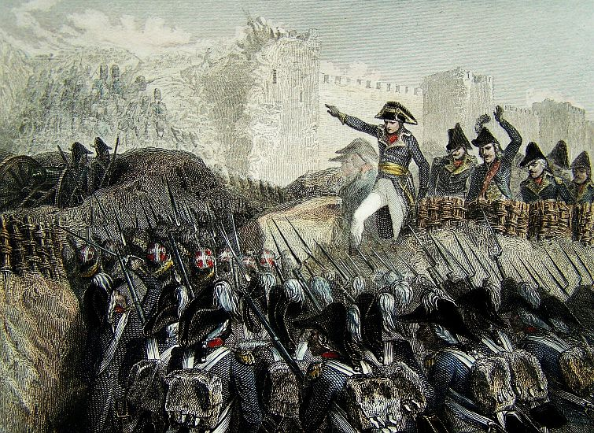
(생-장-다크레를 공격하는 나폴레옹과 프랑스군입니다. 이스탄불까지 진격하려던 나폴레옹의 꿈은 결국 큰 피해만 내고 여기서 꺾입니다. 1806년 예나 전투에서 프로이센군을 격파한 나폴레옹은 포로로 잡은 프로이센 장군들에게 '자신도 시리아의 생-장-다크레에서 패배를 겪었다며 위로의 말을 했습니다.)
우리야 나폴레옹이 희대의 영웅이자 장래 프랑스의 황제가 되는 거물이라는 것을 잘 알고 있습니다만, 당시 나폴레옹이 지휘하던 장군들과 병사들에게, 나폴레옹은 그저 잔재주가 있어 벼락출세한 젊은이 정도였습니다. 그런 젊은 총사령관은 부하 장군들로부터 존경보다는 질시를 많이 받기 마련이었습니다. 이탈리아 원정 때부터 나폴레옹을 따라다닌 젊은 베르티에나 뮈라, 란, 쥐노 등은 나폴레옹에게 남다른 충성심이 있었습니다만, 클레베르나 므누처럼 이번 이집트 원정 때부터 나폴레옹 밑에서 일하게 된 고참 장군들은 여전히 나폴레옹을 시덥쟎게 바라보고 있었지요. 또한 병사들은 아크레 패전 이전부터, 애초에 자신들을 이런 황량한 사막으로 끌고 온 사실 자체 때문에라도 나폴레옹을 크게 원망하고 있었습니다. 이제 그런 장군들과 병사들을 이끌고, 나폴레옹은 전혀 새로운 도전에 직면하게 되었습니다. 바로 패전 퇴각이었지요. 손자병법이든 나폴레옹이 열심히 읽었다는 기베르(Guibert)의 '전술학 개론(Essai general de tactique)'이든 모든 병법서나 전술학 교과서는 '승리'를 가르칩니다. 승리란 좋은 것이지요. 원래 전쟁이라는 것은 삶과 죽음이 교차하고, 군수품이며 행정상의 책임 소재며 온갖 골치아픈 일들이 많은 이벤트이지만, 일단 어떻게든 승리를 거두기만 하면 그런 골치아픈 문제는 저절로 해결되는 경우가 많습니다. 하지만 사람이 언제나 승리만 거둘 수는 없지요. 싸우다보면 작은 규모이든 큰 규모이든 반드시 패배를 경험하기도 합니다. 그런데, 어떤 교과서에서도, 패배시의 행동 요령을 가르치지는 않습니다. 즉, '후퇴학'이라는 학문은 존재하지 않는 것입니다. 나폴레옹도 북이탈리아에서 악전고투를 겪기도 했지만, 근본적으로 그의 모든 작전은 결국 승리로 이어졌고, 그는 30km 이상 후퇴해본 경험이 전혀 없었습니다. 그런데, 이제 나폴레옹은 사기가 땅에 떨어진 병사들과 불만에 가득찬 장군들을 이끌고, 이집트까지 무려 400km의 거리를 후퇴해야 했습니다. 그리고, 패배 뒤의 후퇴 행군에는 승리 뒤 진격하는 행군에서는 생각하지 않아도 되는 수많은 난제가 따라 붙었습니다. 나폴레옹의 후퇴를 어렵게 만드는 요소는 당연히 많았습니다. 병사들의 사기, 장군들의 불만 등은 그런 요소에 끼지도 못할 정도였지요. 그런 요소들을 크게 나누면 이랬습니다. 환자들, 군수품, 피난민, 추격해오는 적군 등이었지요. 제자르 파샤의 추격군을 걱정하는 것은 당연했습니다만, 미리 결말부터 말씀드리자면 실은 추격군은 바싹 따라 붙지 않았습니다. 아크레 전투가 그만큼 치열했기 때문에 제자르 파샤의 오스만 투르크군도 기진맥진했던 것이지요. 다만 그동안 식량을 공급하는 등 프랑스군에게 협조했던 드루즈파 기독교 주민들은 제자르 파샤의 보복을 두려워한 나머지 프랑스군을 따라 가재도구를 챙겨들고 프랑스군을 따라 나섰습니다. 가장 큰 문제는 첫째 문제인 환자들이었습니다. 이제 철수해야 하는 1만8백명의 프랑스군 중, 부상자 및 환자는 무려 2천3백이나 되었습니다. 전 병력의 21%가 넘는 수자였습니다. 이들을 끌고, 오스만 투르크의 추격을 뒤에 달고서 사막이 포함된 800km를 통과한다는 것은 누가 봐도 무리였습니다. 특히나, 이 환자들 중 상당수는 전염성이 강한 페스트 환자로서, 카르멜(Carmel)산 기슭의 격리 병동에 수용되어 있던 환자들이었습니다. 이미 엘 아리쉬(El Arish) 요새 때부터 생겨난 이 페스트 환자들은 꾸준히 증가해왔고, 나폴레옹과 수석 의사 데쥬네트(Desgenettes)가 온갖 본보기를 통해 '이 병은 전염성 페스트가 아니다'라는 확신을 주려고 노력했습니다만, 병사들은 직접 눈으로 본 것이 있었으므로 그 말을 믿지 않았습니다. 그런 상태에서 누가 자원하여 이 열병 환자들을 부축하여 400km를 걸어가겠습니까 ?
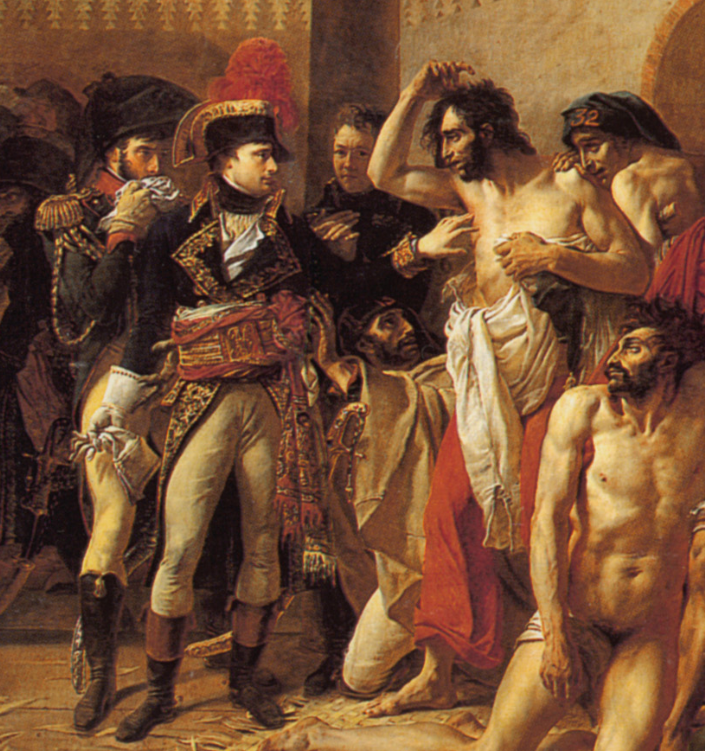
('Bonaparte visitant les pestiférés de Jaffa' 즉 자파에서 페스트 환자들을 방문하는 보나파르트라는 이름의 이 유명한 그림은 나폴레옹이 자신의 업적을 기리기 위해 그가 총애하던 화가 그로( Antoine-Jean Gros)에게 그리도록 한 것입니다. 나폴레옹과 환자 사이에 서있는 사람이 바로 데쥬네트입니다. 병사들을 안심시키기 위해 맨 손으로 페스트 환자들을 친히 만지며 위로를 했다는 나폴레옹 본인의 주장에 대해 '믿을 수 없다 거짓말이다'라며 깎아내리는 사람들도 많았지만, 이 문제에 있어서 나폴레옹과는 사이가 좋지 않았던 데쥬네트 본인이 직접 '다른 건 몰라도 그건 사실'이라고 확인을 해주었으니, 그건 믿으셔도 될 것 같습니다.)
하지만 이 모든 문제를 일거에 해결할 수단이 나폴레옹에게는 있었습니다. 바로 지난편에서, 프랑스 해군의 페레(Jean-Baptiste Perrée) 제독이 이끄는 프리깃(frigate)함 3척과 브릭(brig)함 2척의 소함대가 공성포를 싣고 하이파 바로 남쪽의 탄투라(Tantura) 항에 입항했다고 했었지요. 바로 그 프리깃함들에게 이런 환자들 중 정말 말에 타지도 못할 정도의 중환자들을 싣고 이집트로 직행하라고 하면 모든 것이 해결될 일이었습니다. 당시 프리깃 함의 정원이 대략 200~300명 정도였으니, 좀 무리를 해서 척당 환자를 300명 정도씩 더 태우면 총 9백 명의 환자를 후송할 수 있었습니다. 나폴레옹은 탄투라 항의 페레 제독에게 환자들을 실을 준비를 하라고 급전을 띄웠습니다.
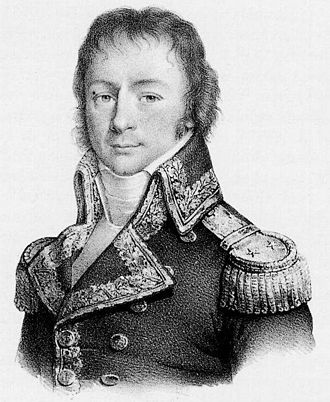
(페레 제독입니다. 그는 원래 뱃사람 집안에서 태어나 선장직까지 오른 사람이었고, 프랑스 혁명이 발발하자 해군에 투신한 인물이었습니다.) 하지만 나폴레옹은 잊었을지 몰라도, 페레 제독은 잊지 않은 사실이 있었습니다. 바로 제해권을 누가 쥐고 있느냐 하는 점이었지요. 아크레에서 가까운 하이파도 아니고 아크레 남쪽으로 40km나 떨어진 탄투라까지 로열 네이비의 감시망을 뚫고 공성포를 싣고 온 것만도 페레 제독이 할 수 있는 것은 사실 다 한 것이었습니다. 나폴레옹의 메시지를 받은 페레에게 든 생각은 '내가 환자들을 책임진다'라는 것보다는 '이제 곧 영국 해군 전함들이 여기로 내려올 것이다'라는 논리적인 것이었습니다. 게다가 전염성이 높은 페스트 환자들을 싣고 항해를 한다는 미션을 기분좋게 생각할 함장은 아무도 없었겠지요. 그렇다고 이 명령을 거부한다면 나폴레옹의 책망과 처벌을 피할 방법이 없을 것입니다. 페레 제독은 곧 심각한 번뇌에 빠져듭니다. 하지만 그는 곧 결론에 도달합니다. 정말 남자다운 결정이었지요. "남자답게, 나폴레옹의 명령을 거부한다. 뿐만 아니라, 남자답게, 아예 이집트가 아닌 프랑스로 귀항한다 !" 그는 이 결정을 휘하 함장들과 상의하여 만장일치의 동의를 받은 뒤 곧장 실행에 옮깁니다. 표면적인 이유는 '보급품 부족으로 어쩔 수 없이 프랑스로 귀항'한다는 것이었습니다. 그가 이끈 프랑스 소함대의 수병들이 느꼈을 그 환희는 가히 상상할 만 합니다. 그러나 이들의 운명은 그리 밝지 못했습니다. 나폴레옹이 철수를 시작한 것이 5월 21일이었으니, 아마도 페레 제독의 소함대가 탄두라 항을 나선 것도 5월 말 이전이었을텐데, 바람이 좋지 않았는지 이들은 6월 18일 경에야 툴롱(Toulon) 남쪽 100km 정도 지점에 도착했습니다. 그런데 운이 나쁘게도, 아니, 생각해보면 당연히, 프랑스 제1 군항인 툴롱 외곽을 봉쇄 중이던 키스(Keith) 제독의 30척 규모의 영국 함대에게 포착됩니다. 이들은 영국 함대를 보자마자 도주했으나 결국 28시간의 추격 활극 끝에 모조리 나포되고 맙니다. 페레 함장은 곧 포로교환에 의해 프랑스로 송환되었습니다. 그 해 10월에 시작된 1달이 넘는 군법회의에서, 페레 제독은 그의 행위, 즉 나폴레옹의 환자 후송 명령 거부와 무단 이탈, 그리고 그에 이은 함대 상실 등의 모든 혐의에 대해 만장일치로 명예로운 무죄 선고를 받습니다. 테브나르(Thévenard) 제독이 주관했던 당시 프랑스 해군성의 판단으로는, 당시 그의 함대가 정말 물과 식량이 부족했을 뿐만 아니라 나폴레옹의 지상군에게 공성포를 공급해주느라 함포까지 떼어주고 탄약도 남아있는 함포 1문당 고작 15발 밖에 남지 않았을 정도로 좋지 않은 상황이었다는 점을 인정했던 것이지요. 실제로 그런 상황에서 페스트 환자들을 잔뜩 싣고 이집트로 갔다면 결국 인명 상실은 물론 함대까지 모두 영국 해군에게 당했을 것이므로 차라리 함대라도 구하기 위해서 툴롱으로 귀환하는 것이 맞았을 수도 있었습니다.

(프랑스 해군 전열함 제네로(Généreux) 호입니다. 이 그림은 영국 측에서 그린 것으로서, 제네로 호보다는 그 뒤쪽의 리앤더(Leander) 호의 분투를 기리기 위해 그려진 것입니다. 영국 해군 리앤더 호는 50문짜리 4급함으로서, 전열함과 프리깃함 중간 정도의 크기였는데, 1798년 74문짜리 제네로 호에게 요격당했으나 용감하게 분전하여 전체 승조원의 약 1/4에 해당하는 사상자(35명의 전사자와 57명의 부상자)를 낸 끝에 결국 제네로에게 항복했습니다. 비록 패전하여 항복했지만 이는 훨씬 큰 체급의 전열함에게 막대한 비율의 사상자를 감수하며 용감히 싸운 것으로서 굉장한 군인 정신으로 칭송되었고, 나중에 포로 송환으로 돌아온 톰슨(Thomas Boulden Thompson) 함장은 그 공로로 기사 작위도 받았을 뿐만 아니라 1년에 200 파운드, 현재 가치로 약 6천만원이라는 거액의 평생 연금도 받았습니다.) 이렇게 무죄 선고를 받은 페레는 불과 2주 후인 11월 28일부터 74문짜리 전열함 제네로(Généreux) 호를 포함한 함대의 지휘권을 받아 툴롱으로부터 말타(Mala) 섬으로의 보급품 수송 작전에 투입됩니다. 당시 말타는 나폴레옹이 이집트 원정을 가는 도중에 점령해놓은 상태였고, 프랑스 수비대가 주둔하고 있었습니다. 하지만 결국 영국 해군이 장악한 지중해에서의 작전은 프랑스 제독의 건강에는 유익하지 않았습니다. 몇 달 후인 1800년 2월 18일, 말타의 발레타(La Valette) 항에 보급품을 하역한 그의 함대는 시실리 섬 남서쪽인 람페두사(Lampedusa) 섬 근처에서 영국 함대를 만납니다. 그의 함대에서 싸울 만한 것은 그의 기함인 전열함 제네로 뿐이었고 나머지는 고작 20문, 16문짜리 코르벳(corvette)함 4척 뿐이었으니, 도저히 영국 전열함 2척만 만나도 도저히 상대가 되지 않았습니다. 그런데 영국 함대는 또 역시 키스(Keith) 제독이 지휘하는 봉쇄 함대의 일부였고, 이 추격전에 동원된 영국 함정은 74문짜리 전열함 3척 (HMS Alexander, HMS Northumberland, HMS Foudroyant)과 32문짜리 프리깃 HMS Success 총 4척이었습니다. 엎친데 덮친다더니, 도주를 시작한 다음날 오후에는 맞은 편에서 2척의 전열함이 더 나타났습니다. 게다가 프랑스 수병보다 훨씬 더 능숙했던 영국 해군 수병들 덕분에, 영국 함대의 속력이 더 빨랐습니다. 어느덧 거리를 좁힌 영국 전열함들이 일제 현문사격(broadside)을 퍼붓기 시작했습니다. 이렇게 영국 해군 전열함들에게 둘러싸여 절망적인 전투를 벌이게 된 페레는 항복하지 않았습니다. 불과 작년 6월에 항복할 때와는 상황이 약간 달랐기 때문이었습니다. 그때는 고작 프리깃함 3척과 브릭함 2척 뿐이었으니 아예 싸움이 되지 않았습니다. 원래 프리깃함 이하는 정찰이나 연락 용도로 쓰이는 함정에 불과했고, 당시 해전은 전열함과 전열함이 싸우는 것이었기 때문에, 프리깃함은 해전이 벌어져도 깃발 신호 중계기 역할만 할 뿐 아예 발포를 안 하는 것이 상식이었습니다. 또 적 함대에서도 해전 중 적 프리깃함에는 (프리깃함이 먼저 포문을 열지 않는 이상) 포격을 가하지 않는 것이 원칙이었습니다. 그러나 이번에는 페레 제독이 타고 있는 군함이 74문 전열함인 제네로 호였으니, 아무리 수적으로 불리하다고 해도 싸우지 않고 항복한다는 것은 있을 수 없는 일이었습니다. 이 전투 와중에, 영국 함대의 포격에 의해 나무 파편이 쏟아졌고, 그 파편 중 하나가 페레의 왼쪽 눈에 정통으로 박혔습니다. 그럼에도 그는 부상자들을 데려가는 안전한 선창 의무실로 가지 않고 갑판에 남아 이렇게 말하며 전투를 지휘했습니다. "Ce n'est rien, mes amis, continuons notre besogne" (아무 것도 아닐세, 친구들. 하던 일 계속 하게.) 그러나 용기와 전투에서의 운이 꼭 비례하는 것은 아니라서, 이윽고 다시 날아온 영국제 포탄이 페레의 오른쪽 허벅지를 강타하며 뜯어냈습니다. 그는 이 타격에 의식을 잃고 쓰러졌고, 제네로 호는 1시간 정도 전투를 벌이다 결국 오후 5시 30분 경 깃발을 내리며 항복했습니다. 부상으로 신음하던 페레는 몇 시간 뒤에 사망했습니다. 그래도 그의 용감한 분투 덕분에 그의 함대 중 코르벳함 3척은 탈출에 성공할 수 있었습니다. 보통 전사자는 지위 여하를 막론하고 즉각 수장되는 것이 원칙이었으나, 용감히 싸웠던 그를 존중했던 넬슨의 명에 의해 그의 시신은 시칠리아 섬 세인트 루시 성당에 안장되었습니다. 그러니까, 페레 제독이 1779년 나폴레옹의 명령을 거부한 것은 최소한 그가 겁장이였기 때문은 아니었다는 것은 증명한 셈이지요.
------------------------------------------------
한편, 페레가 저버린 나폴레옹의 페스트 환자들은 결국 어떻게 되었을까요 ? 아직 페레 제독의 배신을 모르던 프랑스 육군은, 어디까지나 승전군으로서 위무당당하게 적으로부터 빼앗은 군기를 펼쳐들고 풍악을 울리며 팔레스타인의 마을들을 통과할 계획이었습니다. 그러나 그건 계획일 뿐이었고, 정작 아크레 요새 앞에서 철수할 때는 투르크 군에게 들킬새라 야음을 틈타 발뒤꿈치를 들고 살금살금 도망치듯 빠져 나와야 했습니다. 용장 란(Lannes)이 이번에도 최전방(?)을 맡아서 앞장섰고, 후위는 뮈라(Murat)의 기병대가 맡았습니다. 부상자들은 크게 3등분하여, 제발로 걸을 수 있는 자들은 걷도록 했고, 말에 탈 수 있는 자들은 노새와 말, 마차 등에 올라타도록 했습니다. 걷지도 못하는 환자들은 들것으로 실어날라야 했지요. 여기서 당장 생기는 문제는 두번째 부류, 즉 말과 노새로 수송할 환자들이었습니다. 애초에 이집트에서 시리아로 떠나올 때도 말과 노새, 낙타 등이 부족하여 충분한 군수품을 싣고 오지 못할 정도였습니다. 그 사이에 이곳저곳을 약탈하고 노획하여 마필의 수가 늘긴 했지만, 여전히 턱도 없이 부족했습니다. 이 문제의 해결을 위해 나폴레옹은 두가지 결단을 내립니다. 먼저, 40문을 제외한 모든 대포와 그에 딸린 포탄, 화약, 폭발탄 등을 모두 폐기처분하기로 했습니다. 실은 이미 아크레에서 철수를 결정한 뒤에도 굳이 아크레를 평탄화하겠다는 듯 미친 듯한 포격을 퍼부었던 것은 남는 포탄과 화약을 처분하기 위한 노력에 불과했습니다. 그러나, 후퇴하는 도중에 투르크군이 추격해오면 반격할 화력은 남겨두어야 했으므로, 소구경 8파운드 포들 40문과 그에 딸린 포탄 및 화약은 남겨두어야 했습니다. 하지만 24파운드 같은 거포들이나 폭발탄을 쏘아올리는 박격포 등은 모두 처분 대상이 되었습니다. 이들은 10일간의 집중 포격 후 땅을 파고 묻었으며, 그런 소모 사격 이후에도 남은 포탄과 폭발탄 등도 모두 해변에 묻어버렸습니다. 남은 화약은 벌판에서 폭파시켜버렸지요.
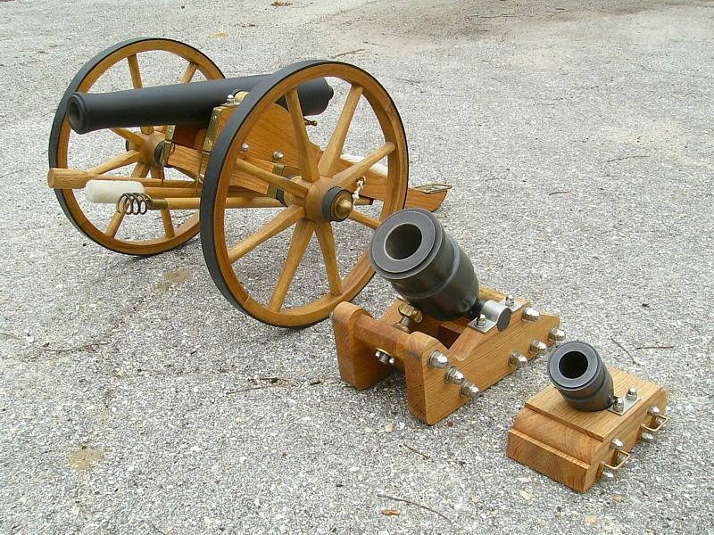
(설마 제 블로그 출입하시는 분들 중에서 아직도 대포와 박격포를 구분 못하는 분은 없겠지요. 왼쪽이 대포, 오른쪽 두대가 박격포입니다. 박격포는 요새 공격에나 필요할 뿐, 야전에서 적의 기병이나 보병을 공격하는데는 별 소용이 없었으므로, 폐기처분 0순위였습니다.)
포병 장비들 뿐만 아니었습니다. 식량과 물, 탄약과 천막 등등을 실어나르던 말과 노새들도 모두 환자 수송으로 돌렸습니다. 덕택에 두발로 걸을 수 있던 병사들이 지고 가야 할 짐이 엄청나게 늘었지요. 당연히 불만이 터져 나왔습니다. 나폴레옹은 그런 불만을 잠재우기 위해 노블레스 오블리쥬를 실천합니다. 즉, 자신을 포함하여 지위고하를 막론하고, 두 발로 걸을 수 있는 모든 인원은 말을 내놓고 걸어야 한다는 것이었습니다. 당시 설사병에 걸려 쇠약하던 늙은 학자 몽쥬(Monge)와 베르톨레(Berthollet), 코스타스(Costaz), 그리고 최근에 애를 낳아서 젖을 먹여야 하는 어느 장교의 부인 정도가 나폴레옹의 배려로 마차에 탈 수 있었습니다. 나폴레옹 본인이 걸었던 것은 물론입니다. 사실 환자 수송 문제는 좀더 보기 좋게 해결할 수도 있었습니다. 제해권을 장악하고 있는 영국 해군의 시드니 경에게 편지를 써서, '환자들을 철수시킬 수송선들을 하이파에 입항시키는 것을 허락해달라' 고 요청만 하면 되었습니다. 그러나 나폴레옹의 자존심이 그를 허락하지 않았습니다. 처음에 아크레 포위전을 시작할 때는 포로 교환 등을 통해 시드니 경과 나폴레옹의 사이는 상당히 좋아진 상태였습니다. 그러나 아크레 포위전 초반에 제자르 파샤가 성내의 기독교인들과 함께 프랑스군 포로들을 학살한 사건을 통해 나폴레옹과 시드니 경의 사이가 벌어졌고, 특히 5월 대공세 중에 프랑스군의 패배가 윤곽이 잡혀갈 때 시드니 경이 나폴레옹에게 보낸 편지가 결정적으로 나폴레옹의 자존심을 긁어놓았습니다. 그 편지 내용을 요약하면 대충 이랬습니다. "불과 2년 전 나 시드니가 탕플 감옥에 갇혀서 목숨이 위태로울 때 마침 이탈리아 정복을 마치고 금의환향한 나폴레옹 너에게 도움을 바라는 편지를 보냈는데 넌 답장조차 하지 않았지. 그런데 그랬던 내가 지중해 반대편에서 지금 널 물먹이고 있어. 어때, 운명이란 참 알 수 없는거지 ?"
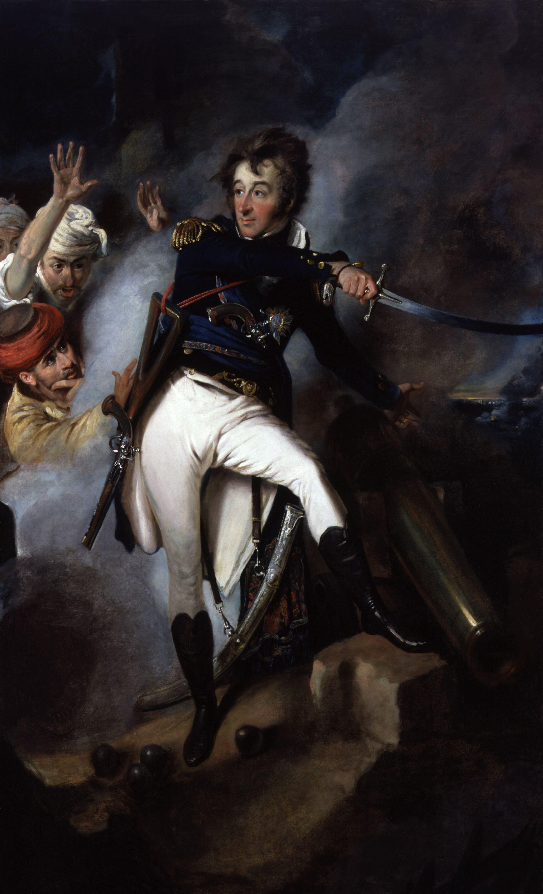
(생-장-다크레 성벽에서 오스만 투르크군을 지휘하여 나폴레옹을 무찌르는 시드니 함장의 모습입니다. 어쩔 줄 몰라하는 투르크인들을 검을 뽑아들고 침착하게 지휘하는 영국 해군 함장의 모습이라니, 정말 백인 중심의 역사관을 그대로 보여주는 그림입니다. 실제로 나폴레옹을 무찌른 것은 (비록 인간성은 몹시 나빴지만) 제자르 파샤와 그의 투르크군의 용기 덕분이었습니다.)
이 편지를 받은 나폴레옹은 자신의 꿈이 꺾인 것에 대해 심하게 상심했던 상태라, 특히 운명 운운하는 이 편지에 깊은 내상을 입었나 봅니다. 이후 그는 시드니 경과는 일절 연락을 끊었습니다. 다만 나중에 회고록에서 '그 남자가 나의 운명을 놓치게 만들었다' 라는 말로 시드니의 업적을 간접적으로 인정했다고 합니다. 아무튼 나폴레옹은 자존심을 지키기 위해 영국 해군에게 자비를 구하는 편지를 쓰는 것보다는, 자신 스스로 문제를 해결하는 방식을 취합니다. 즉, 수석 참모인 베르티에(Berthier)를 제외한 모든 사람을 물린 뒤, 수석 내과의사인 데쥬네트(René-Nicolas Dufriche Desgenettes)를 불러 들인 것입니다. 나폴레옹이 데쥬네트에게 요구한 것은 간단히 말해서 페스트 환자들에게 치사량의 아편을 투약하여 안락사시키라는 것이었습니다. 어떻게 보면 나폴레옹의 판단이 더 이성적인 것일 수 있습니다. 어차피 차료제도 없었으므로 그 페스트 환자 대부분은 죽을 목숨이었거든요. 게다가 이대로 그들을 버리고 철수하면 투르크군이 쫓아와 이들의 목을 벨 것이 뻔했습니다. 실은 목만 베면 다행이고, 투르크군의 관습대로 프랑스군을 환자들에게 온갖 고문을 가하다가 죽일지도 몰랐습니다. 자파에서 행한 투르크 포로 학살의 업보가 아직 남아 있었던 것이지요. 또한, 이 페스트 환자들을 어떻게든 데리고 가겠다고 눈물겨운 전우애를 발휘하다가, 건강한 병사들에게까지 전염이 된다면 그건 정말 프랑스 원정군의 전멸로 이어질 수도 있는 위협이 되었습니다.
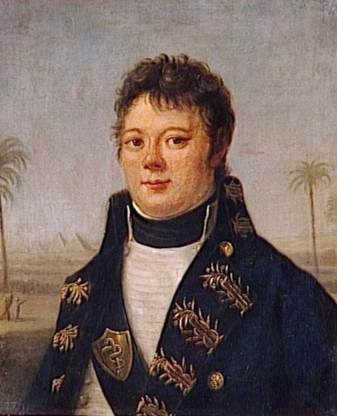
(데쥬네트는 여기서 나폴레옹의 명령에 항명했다가 나중에 이집트에 되돌아간 뒤, 나폴레옹에 의해 시리아 원정 패전의 책임을 한 몸에 뒤집어 쓸 위기에 처합니다. 그러나 그의 노력을 잘 알고 있던 병사들의 지지 덕택에 나폴레옹도 함부로 그를 대하지 못했고, 결국 명예를 유지할 수 있었습니다. 뿐만 아니라 실력은 누구도 무시할 수 없는 것이라서, 나폴레옹은 항상 그를 요직에 앉혔고 복위한 부르봉 왕가에서도 그가 백일천하 때도 나폴레옹에게 협력한 인물이었음에도 그를 중요 관직에 기용했습니다. 여러분, 기술을 배웁시다.)
이렇게 논리적인 나폴레옹의 설득에도 불구하고 데쥬네트는 의사다운 원칙을 고수합니다. 자신의 의무는 생명을 구하는 것이지 죽음을 주는 것이 아니라는 것이었지요. 베르티에는 이 두 남자의 토론이 이어지는 와중에 눈을 옆으로 돌리고 아무 말도 못 듣는 듯이 딴전을 피웠지만, 나중에 사석에서는 데쥬네트에게 '선생의 원칙에 자신도 동의한다'고 슬쩍 이야기했다고 전해집니다. 아무튼 데쥬네트의 원칙 덕분에, 이 페스트 환자들은 집단 독살의 위기에서 일단 벗어납니다. 하지만 어쩌면 나폴레옹의 제안이 옳았는지도 모릅니다. 이 환자들은 어차피 결국 다 죽을 목숨이었거든요. 결국 죽을 거라면 그냥 빨리 편하게 죽는 것이 더 좋은 일일지도 모르지요. 데쥬네트의 단호한 거부로 인해, 결국 페스트 환자들을 포함한 이 패잔병들의 집단이 남쪽으로 후퇴를 시작할 때만 해도, 질서는 완벽한 상태였다고 합니다. 하지만 ‘3년 병치레에 효자 없다’라는 말이 있듯이, 이 환자들을 데리고 가던 동료 프랑스 병사들의 인도주의 정신은 곧 바닥을 드러냅니다. 그들은 곧 길가에 이 거추장스러운 동료 환자들, 특히 페스트 환자들을 내팽겨치기 시작했지요. 나폴레옹의 비서였던 부리엔(Bourrienne)의 기록에 따르면, 이 후퇴하던 길가 곳곳에 버려진 환자들이 지나가는 프랑스군 병사들에게 애처로운 목소리로 '난 부상병일 뿐 페스트 환자가 아니니 데려가 달라 !' 라고 절규하는 모습을 흔하게 볼 수 있었다고 합니다. 이 환자들은 자신이 부상병일 뿐 페스트 환자가 아니라는 것을 증명하기 위해 몸에 감고 있던 붕대를 풀고 상처를 보여주기도 했습니다. 그러나 이렇게 버려진 환자들 중 많은 수가 사실 페스트 환자들이었기 때문에, 이렇게 보여줄 상처가 따로 없었습니다. 그래서 이들 중 상당수는 자신의 몸에 자해를 가해 '페스트 환자가 아닌 부상자'로 위장하려고 했다고 합니다. 하지만 이런 행동은 결국 진짜 부상자들도 버림받는 결과를 낳았을 뿐이었습니다. 진짜 비극은 이들이 고생고생하며 페레 제독이 기다리고 있을 탄투라(Tantura) 항에 도착하면서 벌어집니다. 그래도 탄투라까지만 이 무거운 환자들을 부축하면 된다는 믿음으로 애써 환자들을 데려 왔는데, 정작 와보니 페레 제독은 이미 출항하고 난 뒤였던 것입니다. 혹시 사정이 있어서 잠시 출항한 것이고, 곧 되돌아올지도 모른다는 생각 (혹은 핑계)으로 병사들은 항구에 일단 환자들을 내려 놓고 자신들은 계속 남하합니다. 이렇게 탄투라 항에만 8~9백 명의 환자들이 버려집니다. 이들 중 일부는 다시 동정심 많은 동료들에게 구원되었고, 일부는 결국 버려지지요.
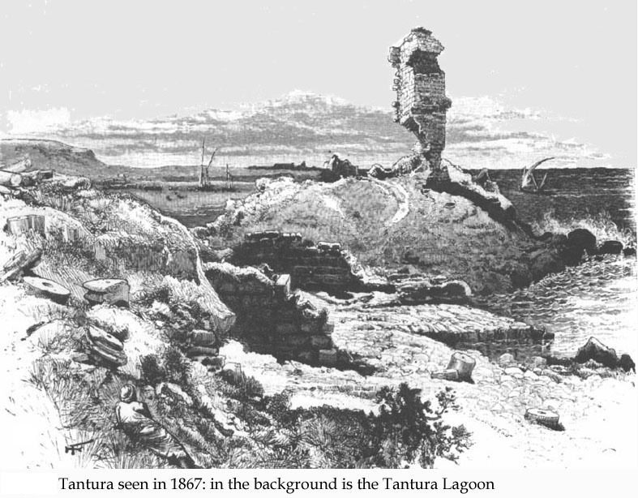
(저 바닥 설명대로, 1867년 당시의 탄투라 항의 모습입니다. 여기에도 원래 십자군 시대의 작은 요새가 있었지요.) 페레 제독의 걱정은 사실 기우는 아니었습니다. 이렇게 해안가를 따라 후퇴하는 나폴레옹군 옆에 곧 시드니 경의 기함 티그르(HMS Tigre) 호가 나타나 간간히 사격 연습을 하듯 포격을 가해왔고, 힘없이 걷는 프랑스군들 한두명씩이 이렇게 날아오는 대포알에 나가 떨어졌습니다. 퇴각을 시작한 5월 21일부터 3일만인 5월 24일에 프랑스군은 아크레에서 약 112km 남쪽인 자파 (Jaffa)에 도착합니다. 하루에 약 40km를 행군한 셈이지요. 여기서 프랑스군은 진짜 구세주를 만납니다. 자파 부두에서 배들을 몇척 발견한 것이지요. 프랑스군은 얼씨구나 하면서 남아있는 환자들 중 1천2백명 정도를 이 배들에 태워 이집트 다미에타(Damietta)로 출항시킵니다. 그리고 여기서 그동안의 강행군에 지친 병사들을 위해, 또 그리고 뒤쳐진 부대들이 따라잡을 시간을 주기 위해 4일간의 휴식 기간을 가집니다. 그래도 참 다행이라고 할 수 있지요 ? 하지만 그렇게까지 다행은 아니었습니다. 프랑스군은 이 환자들을 그냥 '처분'하는데만 관심이 있었을 뿐, 정말 이 환자들이 다미에타에 도착하건 말건 아무런 관심이 없었습니다. 그래서 이들 선박에는 정말 제대로 된 선원도 없이, 심지어는 물과 식량도 없이 그냥 환자들만 실어서 바다로 밀어냈던 것입니다. 이건 사실상의 수장이나 다름없었던 것일까요 ? 글쎄요. 당시 프랑스군과 영국군 사이에는 적대감 외에도 이 '야만적인 중동 지방'에서 유일한 문명인들이라는 유대감이 있었습니다. 그래서 프랑스군은 나폴레옹의 자존심과는 별개로, '이렇게 바다에 밀어 넣으면 영국 해군이 알아서 건져주겠지'하는 기대감이 있었던 것 같습니다. 실제로도 이들은 바다로 나오는 족족 모두 영국 해군에 나포되었고, 영국 해군은 이들에게 물과 식량을 공급했을 뿐만 아니라 이들이 난파하지 않고 무사히 다미에타에 입항하도록 호송까지 해주었습니다. 시드니 경의 기록에 따르면 이 프랑스군 환자(?)들은 영국 해군에게 무한한 감사를 표했을 뿐만 아니라, 자신들을 사지로 몰아넣고 모른 체한 나폴레옹에게 입에 담을 수 없는 저주를 퍼부어댔다고 합니다. 제 생각에도 그랬을 것 같습니다.
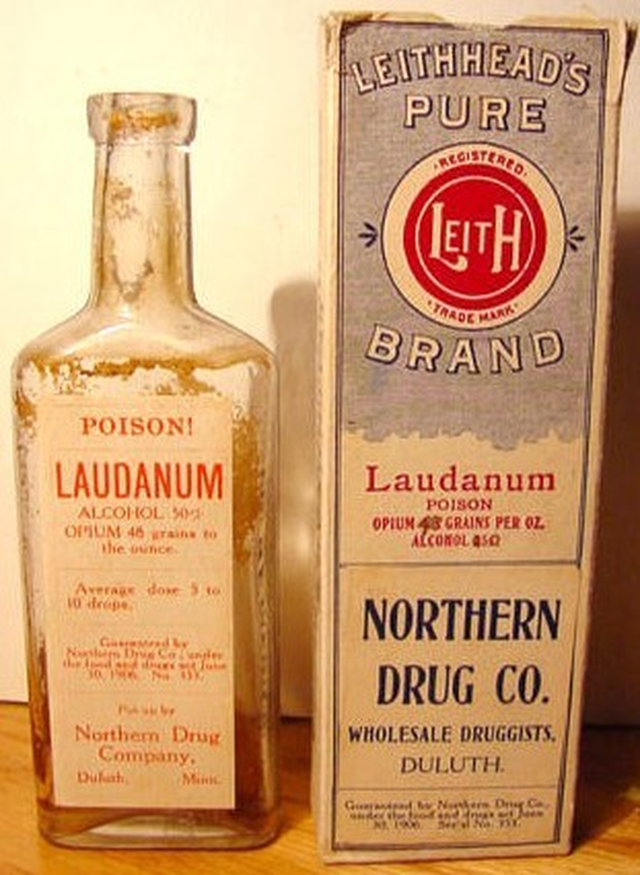
(아직 아편의 중독성이 널리 알려져 있지 않던 18세기 말에는 알코올에 아편을 녹인 로다넘(laudanum)이라는 약품이 상류층에서는 진정제나 수면제로 흔히 사용되었습니다. Aubrey & Maturin 시리즈에서 의사인 머투어린도 이 로다넘을 과용하는 바람에 아편에 중독되어 고생을 하는 모습이 그려집니다.) 이렇게 영국 해군에게 구조(?)된 환자들 말고도, 나폴레옹에게는 아직도 자파에 8~9백명의 환자들이 있었습니다. 이들 중 일부는 병 또는 부상이 악화되어 사망하는 행운을 누렸고, 또 일부는 저절로 병이 완쾌되는 로또 당첨의 행운을 가질 수 있었습니다. 하지만 여전히 다 데려가기엔 너무나 많은 환자들이 있었습니다. 나폴레옹은 여기서 다시 데쥬네트에게 안락사 이야기를 꺼냈으나, 다시 데쥬네트는 단호히 거절했습니다. 하지만 이 후퇴 며칠 동안의 참상이 너무 끔찍했는지, 나폴레옹은 포로로 잡힌 투르크인 하즈 무스타파(Hadj Mustafa)라는 의사에게 명하여 치사량의 아편을 환자들 수십명에게 먹이도록 했다고 합니다. 데쥬네트와 부리엔의 기록에 따르면 그렇습니다만, 역시 현장에 있었을 부관 라발레트(Lavallette)와 수석 외과 의사 (physical과 surgeon이 다른 것은 아시지요?) 라리(Larrey)에 따르면 이런 일은 결코 없었다고 합니다. 글쎄요, 누구의 증언이 맞는지는 모르겠습니다만, 합리적인 나폴레옹과 원칙론자인 데쥬네트의 갈등이 극도에 달했다는 것만은 확실합니다. 어쨌거나 프랑스군이 철수한 뒤 몇시간 뒤에 자파 항에 입항한 시드니 경이 목격한 것은 정말 을씨년스러운 광경이었습니다. 불과 3달 전에 자신들이 학살했던 시체 위에, 새로 숨진 프랑스군의 시체들이 묻히지도 않고 즐비하게 늘어져 있었던 것입니다. 이들은 치사량의 아편을 먹은 환자들이었을까요 ? 혹은 긴 행군과 페스트, 부상에 지쳐 자연사한 시체들이었을까요 ? 아무튼 시드니 경은 이 곳에서 아직 숨이 붙어있는 환자 7명을 발견했고 이들을 돌보아 주었다고 기록했습니다.
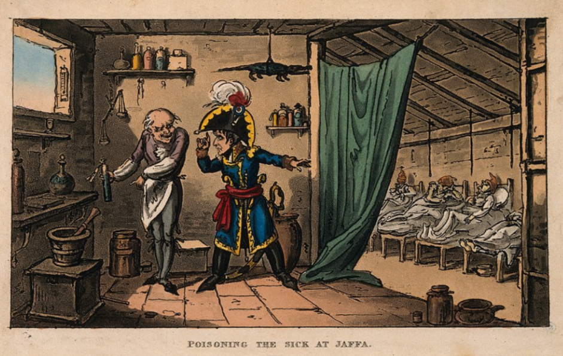
(나폴레옹이 자파에서 페스트 환자들을 독살하라고 명령하는 모습을 그린 풍자화입니다.)
이런 스트레스 받는 자파에서의 기억을 뒤로 한 채, 나폴레옹은 부지런히 걸어 5월 29일, 자파 남쪽 100km 지점인 가자(Gaza)에 도착합니다. 4일간의 휴식 기간을 생각하면 자파에서 여기까지 100km를 단 2일 만에 돌파했다는 이야기지요. 그나마 여기까지 이렇게 쾌속 후퇴를 할 수 있었던 것은 여기까지의 환경이 마치 어느 프랑스 장교의 말처럼 '프랑스 랑그독 지방과 유사'한 온화한 지방이었기 때문이었습니다. 이제 가자(Gaza)부터는 사막 지대였습니다. 지난 2월, 한겨울에 사막을 통과할 때도 죽을 맛이었는데, 이제 온도가 30도를 넘는 여름에 가까운 날씨에 사막을 건너야 하는 입장이 된 것입니다. 더구나 지금은 환자들 수송 때문에 물을 싣고 갈 말이 전혀 없었습니다. 게다가 전과는 달리 많은 환자들을 들 것에 싣고, 또 어깨에 부축하고 걸어서 사막을 건너야 했습니다.
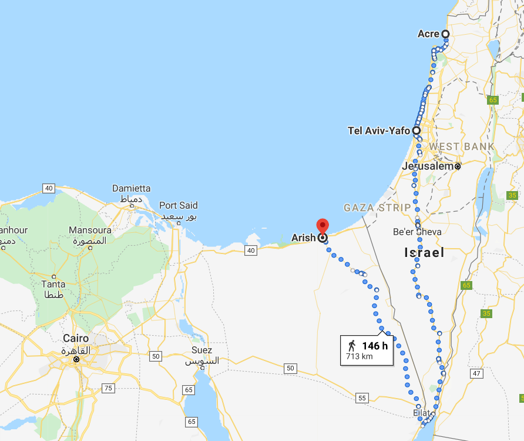
(아크레에서 텔 아비브까지의 거리는 약 117km로서, 3일간 걸어야 합니다. 그런데 텔아비브에서 이집트 엘 아리쉬(El Arish)까지는 해안을 따라 걸으면 120km 정도지만, 지금도 구글 맵에서는 걸어서 가더라도 길이 없는 것으로 나오는 진짜 사막이며 굳이 걸어서 간다면 시나이 반도 사막을 홍해 쪽으로 빙 둘러 가게 되어 있습니다. 정말 죽음의 행군로였던 셈입니다.) 여태까지 적어도 겉으로는 침착했던 나폴레옹도 여기서는 폭발했다고 합니다. 이제 사막을 눈 앞에 두고 막막해하는 장병들 앞에서, 나폴레옹의 수석 마구간지기가, 그동안 환자들을 위해 지위고하를 막론하고 모두 걷는다라고 내린 명령이 이 지경에서도 유효한지 몰라서, 나폴레옹에게 슬쩍 다가와 '말을 타시겠습니까요' 하고 권했던 것입니다. 나폴레옹의 부관이었던 라발레트의 기록에 따르면, 그는 나폴레옹이 사람을 직접 때리는 모습을 여기서 처음이자 마지막으로 보았다고 합니다. 나폴레옹은 짜증이 잔뜩 섞인 얼굴로 이 마구간지기에게 덤벼들어 승마용 채찍으로 이 분위기 파악 안되는 친구를 마구 때렸다고 합니다. 아무튼 환자를 제외한 전원이 걸어서 사막을 통과했는데, 부리엔의 기록에 따르면 여기서 정말 인간들의 진면목을 볼 수 있었다고 합니다. 지난 수백 km를 온갖 역경을 헤쳐가면서도 끝내 포기하지 않고 데려온 부상당한 동료들을, 갈증이 시작되자 병사들이 뒤도 돌아보지 않고 사막 한가운데 내버렸던 것입니다. 어찌 보면 나폴레옹의 말대로 안락사를 시키는 것이 더 좋았을 수도 있고, 아니면 영국 해군의 자비심에 몸을 맡기는 것이 더 좋았을 수도 있었겠습니다. 아무튼 그동안 온갖 고생을 다했던 부상자들과 환자들 중 상당수가 이렇게 지글지글 볶는 사막 한가운데서 버려져 가장 비참한 죽음을 맞이했습니다. 하지만 모두가 그렇게 죽은 것은 아니었고, 또 건강한 병사들이라고 무사히 사막을 건널 수 있었던 것도 아니었습니다. 갈증에는 군기고 뭐고 없는지라, 행렬이 길게 축축 늘어지는 바람에 많은 병사들이 길을 잃고 사막에서 목숨을 잃었습니다. 이렇게 사막을 건너면서 하도 대오가 흐트러지는 바람에, 오아시스를 발견하면 그 자리에서 대포를 쏘아 사막 여기저기에 흩어진 병사들을 불러모으기도 했다고 합니다. 이런 생지옥 속에서도 프랑수와(Francois)라는 대위는 아크레 전투에서 두 다리가 잘려나간 친구 노엘(Noel)을 끝까지 버리지 않아 (실은 프랑소아 대위보다는 그 휘하의 12명의 병사들이 고생을 했지요) 결국 이 친구를 데리고 사막을 무사히 건넜다고 합니다.
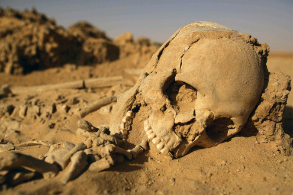
이렇게 후퇴 중에 프랑스군의 군기가 제대로 유지되지 않은 것은 당연했습니다. 최초의 반란은 가자에서 사막을 건너라는 명령이 내려졌을 때였는데, 사실 이는 명령 불복종일 뿐 본격적인 반란은 아니었습니다. 사실 병사들이 반란을 일으킨다고 해도, 무엇을 어떻게 하겠습니까 ? 여기서 나폴레옹의 목을 베어 제자르 파샤에게 간다고 하더라도 그들이 꿈에도 그리던 프랑스로 돌아갈 희망은 전혀 없다고 봐도 무방했거든요. 이런 소소한 명령 불복종의 대표적인 사례가 하나 있습니다. 바로 클레베르(Kleber) 장군 휘하에서 있었던 일이었습니다. 찌는 듯한 더위 속에 사막을 건너던 병사들은 이제 해가 지고 휴식 나팔이 울리자, 당연히 하루의 행군을 중단하고 여기서 야영을 한다고 생각을 하고는 잠을 잘 준비를 하기 시작했습니다. 하지만 뜻 밖에도, 출발을 뜻하는 북소리가 울려 퍼졌습니다. 도저히 힘들어서 못 움직이겠다고 병사들이 집단적으로 웅성이다가, 마침내 장교들의 명령을 거부하고 병사들이 드러누워 버렸습니다. 이 사정을 모르고 먼저 출발했던 클레베르 장군에게, 뒤에서 장교가 헐레벌떡 뛰어와서 이 반란 소식을 알려주었습니다. 그런데 클레베르 장군의 대응이 걸작이었습니다. "걔들도 김을 좀 빼야겠지. 내버려 둬. 마음대로 욕하게 내버려두고. 우린 그냥 모르는 척 출발하자고. 걔들이 뭘 어쩌겠어 ? 따라오는 수 밖에." 실제로 장교단이 그냥 출발해버리자, 이 병사들도 분통을 터뜨리다가 결국 그 뒤를 따라 출발했다고 합니다.
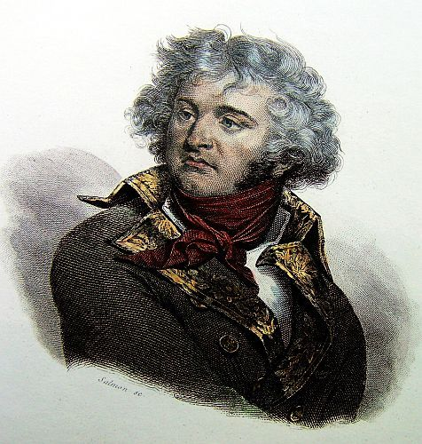
(그 일화를 들을 수록 마음에 드는 쿨 가이 클레베르입니다.) 이렇게 고생 끝에 사막의 요새 엘 아리쉬(El Arish)에 도착했을 때의 기쁨은 말할 수 없었을 것입니다. 그동안 사막에서 바짝 타들어갔던 병사들은 여기서 비로소 먹을 것을 구할 수 있을 것이라 생각했지만, 현실은 냉혹했습니다. 이 요새에 저장된 식량은 이 요새 수비 병력과 환자들을 위해서만 쓰였고, 엎어지고 자빠지며 사막을 건너온 병사들에게는 아무 것도 주어지지 않고, 2일을 더 걸어서 정말 이집트 땅인 카티아(Katia)까지 갈 것이 명령되었습니다. 결국 프랑스군 선두가 카티아에 도착한 것은 6월 5일, 아크레에서 출발한지 16일 만이었습니다. 하지만 정작 이들이 카이로로 귀환한 것은 그로부터 다시 9일 뒤였습니다. 이는 나폴레옹의 자존심 때문이었습니다. 실은 자존심보다는 이집트의 치안 때문이라고 보는 것이 더 맞겠습니다. 나폴레옹은 자신의 귀환이 어디까지나 승전 후 자랑스러운 개선으로 비추어 지길 바랬고, 또 그렇게 해야 이집트 민중이 프랑스군에게 고분고분하리라고 생각했던 것입니다. 그래서 일단 보기 흉한 환자들과 부상병들은 모두 카이로가 아닌 다미에타나 로제타 등의 해안가 병원으로 보내 분산되도록 했고, 건강한 병사들도 새 군복을 받기 전에는 카이로에 입성하지 못하도록 했습니다. 마침내 6월 14일, 나폴레옹은 산뜻한 새 군복을 입고 번쩍번쩍하게 닦은 머스켓 소총을 어깨에 맨 군대를 이끌고 카이로에 있는 승리의 성문(Bab-el Nasr)을 통해 보무도 당당히 개선합니다.
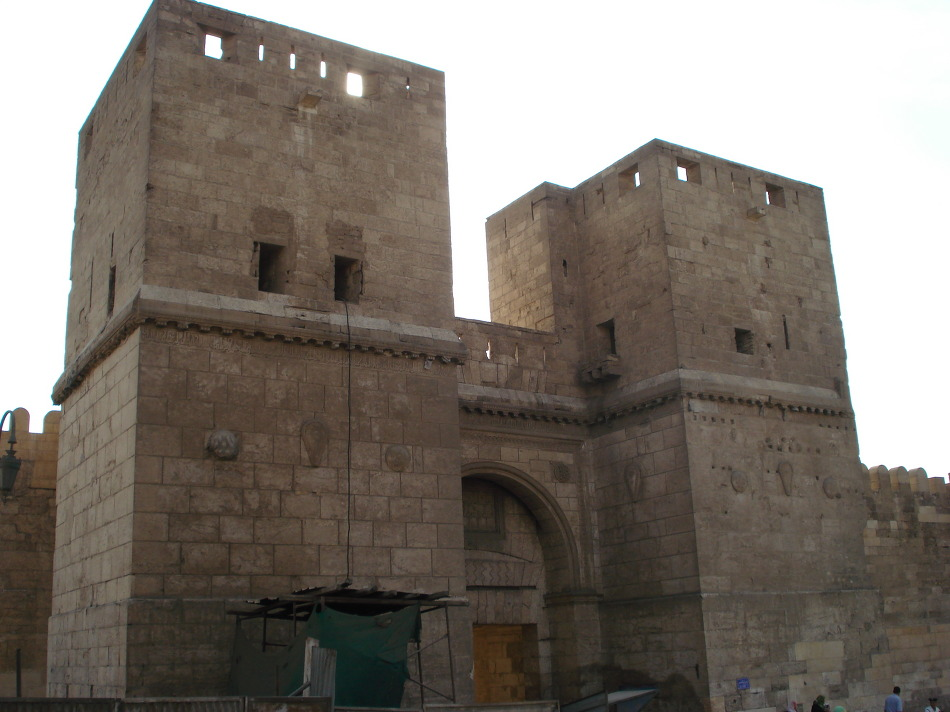
(카이로의 개선문 Bab-el Nasr 입니다.)
Source : https://en.wikipedia.org/wiki/Ren%C3%A9-Nicolas_Dufriche_Desgenettes https://en.wikipedia.org/wiki/French_campaign_in_Egypt_and_Syria https://en.wikipedia.org/wiki/Jean-Baptiste_Perr%C3%A9e https://en.wikipedia.org/wiki/French_ship_G%C3%A9n%C3%A9reux_(1785)